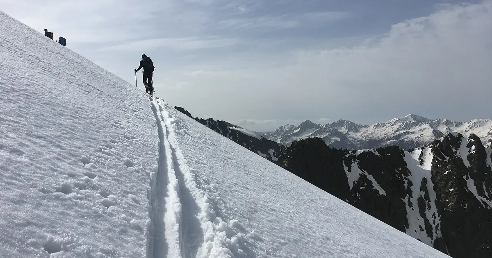

Where to ski in the Alps this weekend: Isola 2000, Artesina and Bonneval-sur-Arc
We combined today's snow depth, the new snow of the last 72 hours and the forecast to pick Isola 2000, Artesina and Bonneval-sur-Arc. Of these resorts, Bonneval-sur-Arc has the most snow on its upper slopes today, about 52 cm; then come Crissolo 33 cm and Artesina 21 cm.
See the live snow forecast for Isola 2000 in the SnowScope appSnow depth, powder alerts and the 3D map, free.
Where to go
Isola 2000 got 62 cm of new snow in the last 72 hours, 7 cm of it in the last 24 hours. Height matters: at Isola 2000, our model gives 17 cm at the top (2,601 m), 15 cm at mid-mountain (2,214 m) and 12 cm at the base (1,828 m). On its last clear day, 30 October, satellites saw no snow at Isola 2000: the snow there may be only on the highest slopes, or it fell after that day.
Artesina got 61 cm of new snow in the last 72 hours, 8 cm of it in the last 24 hours. Height matters: at Artesina, our model gives 16 cm at the top (2,091 m), 1 cm at mid-mountain (1,446 m) and 0 cm at the base (801 m). On its last clear day, 29 October, satellites saw no snow at Artesina: the snow there may be only on the highest slopes, or it fell after that day.
Bonneval-sur-Arc got 32 cm of new snow in the last 72 hours, 7 cm of it in the last 24 hours. Height matters: at Bonneval-sur-Arc, our model gives 21 cm at the top (2,948 m), 6 cm at mid-mountain (2,371 m) and 1 cm at the base (1,794 m). Satellites saw Bonneval-sur-Arc snow-covered on 1 November, its last clear day.
| Resort | Snow depth | New snow, 72 h | Coming, next days | Top |
|---|---|---|---|---|
| Isola 2000 | 19 cm | 62 cm | 3 cm | 2,601 m |
| Artesina | 21 cm | 61 cm | 1 cm | 2,091 m |
| Bonneval-sur-Arc | 52 cm | 32 cm | 7 cm | 2,948 m |
| Crissolo | 33 cm | 46 cm | 4 cm | 2,308 m |

Which height to ski
At Isola 2000, the freezing level reaches 2,500 m to 2,590 m on 9 November, so the lower slopes may get wet snow while the top stays wintry.
Look for snow high up and on north-facing slopes: they keep it longest, while south-facing slopes lose it first in the sun.
Safety and avalanche level
Before you ski off-piste or go touring, read the official avalanche bulletin (links below).
What is coming next
More snow is on the way: by 9 November our forecast gives 3 cm at Isola 2000, 1 cm at Artesina and 7 cm at Bonneval-sur-Arc.
Forecasts a few days ahead can change: look at the map again the day before you travel.
Tips for skiers
- Snow on the map does not mean a resort is open: check lifts and opening dates on the resort's website.
- Smaller resorts near the leaders often get the same snow with fewer people: compare them on the map.
- Early-season snow is thin. Stay on open, groomed pistes: rocks and grass can hide just under the surface.
- Look for snow high up and on north-facing slopes: they keep it longest, while south-facing slopes lose it first in the sun.
- Get a powder alert in the SnowScope app to know when Isola 2000 gets fresh snow.
About these numbers
Resort snow depths are the deepest snow on the resort's upper slopes from the SnowScope snow model (about 1 km, run of 5 November); they are estimates for an area, not a measurement at one point. Station values are measurements on the date shown. Forecasts can change. Always read the official avalanche bulletin before going off-piste.
Official avalanche bulletins: EAWS (Alps)
Cite this report
For research, teaching or the press: the numbers and charts are free to reuse under CC BY 4.0 with this citation.
SnowScope (2026), Where to ski in the Alps this weekend: Isola 2000, Artesina and Bonneval-sur-Arc, https://snowscope.app/blog/en/2026/11/alps-where-to-ski-this-weekend-6-november-2026.html, accessed 2026-11-06
SnowScope (Atlas Labs). (2026, November 6). Where to ski in the Alps this weekend: Isola 2000, Artesina and Bonneval-sur-Arc. SnowScope snow reports. https://snowscope.app/blog/en/2026/11/alps-where-to-ski-this-weekend-6-november-2026.html
BibTeX
@misc{snowscope2026alpswheretoskithisweeken,
author = {{SnowScope (Atlas Labs)}},
title = {Where to ski in the Alps this weekend: Isola 2000, Artesina and Bonneval-sur-Arc},
year = {2026},
month = nov,
howpublished = {\url{https://snowscope.app/blog/en/2026/11/alps-where-to-ski-this-weekend-6-november-2026.html}},
note = {Published 2026-11-06 12:45 UTC; accessed 2026-11-06}
}· CC BY 4.0 · Methods, data and tools →
Isola 2000: snow and temperature by height, this winter vs last (tools) →
Follow Isola 2000
Free: a message when fresh snow is coming, and the forecast every morning.
More snow reports

Seven days in the Silvretta Arena, one at a time: where the snow is, when to cross to Samnaun, and what 46 past winters say about Ischgl's snow at three heights.

Davos and Klosters share six ski mountains. A day-by-day plan, starting on Parsenn, with what 46 past winters of our snow history say about its heights.

When to book Courchevel and the 3 Vallées, which village to stay in and where the snow lasts, planned from 46 past winters of snow data.